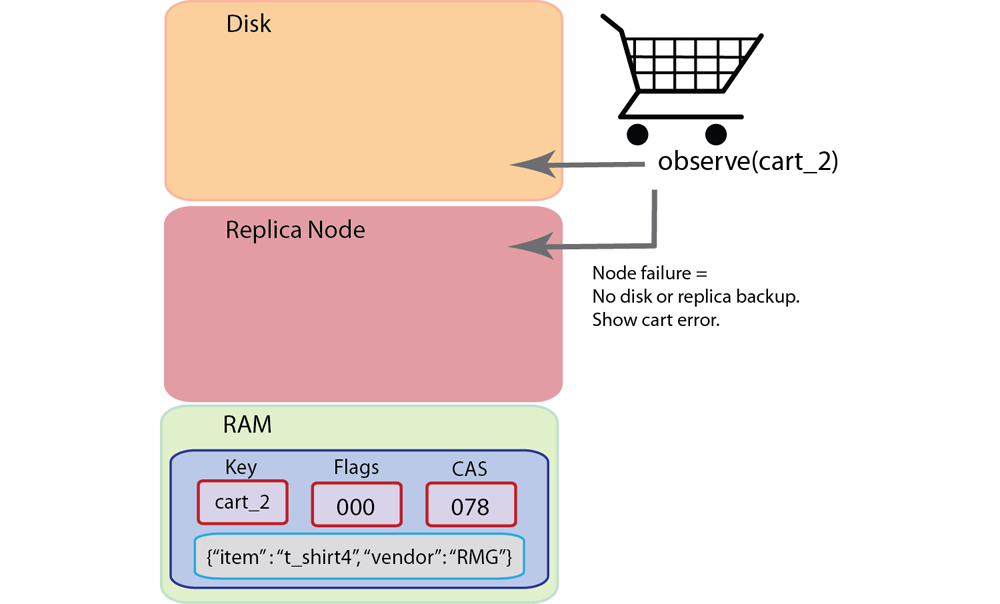
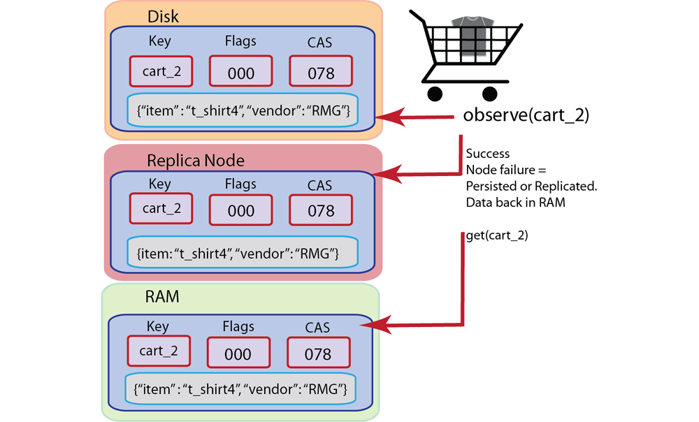

Monitoring data using observe
With Couchbase you can use observe functions in the SDKs to determine the status of a document in Couchbase Server. This provides a level of assurance in your application that data will be available in spite of node failure.
For instance, you may want to create a ticketing application and you want to place a hold on tickets while you perform a credit card authorization to pay for the ticket. If a node fails during that time, you may not be able to recover the current state of the ticket, and determine whether it was on hold for a user, or not. If the ticket is in RAM only, you may not be able to retrieve the ticket at all. By using an observe command, you can determine whether the ticket is persisted or whether it has been replicated. You can then determine if you retrieve the ticket state you can get the most current version that is on disk.
This section describes when you would want to use observe-functions and how to implement it in your application.
Why observe items?
One of the challenges working with items that can be in-memory or on-disk is that you may want to keep track of the state of your document in the system. For instance, in your application you may also want to know if a document has been stored to disk or not. You may also want to specify how many copies of a document are stored on replicas. Both of these enhancements enable you to recover important documents and provide consistent information in your application despite server failure.
With Couchbase Server, you can use Couchbase SDK observe-functions to do the following in your application logic:
-
Determine whether a document has been persisted,
-
Determine whether a document has been replicated.
One of the new features of Couchbase Server is support for indexing and querying of data. We provide this functionality as views. Views enable you to find specific information in Couchbase Server, extract information, sort information, and also perform a wide variety of calculations across a group of entries in the database. For instance if you want to generate an alphabetical list of users in your system you can use views to do so.
Couchbase Server can index and query information from a document when that document is actually persisted to disk. Therefore you may want to use an observe-function to determine if the document is persisted and therefore available for use in views. To do so, you would make an observe request, and after you know Couchbase Server persists the item, you can retrieve the relevant view.
The other scenario you may want to handle in your application is where you want to make sure a document has been replicated. You can automatically configure replication of data from one cluster to another cluster and from one data bucket to another bucket. Collectively, this functionality is known as cross data center replication (XDCR).
The final scenario where you would want to use an observe-function is for documents that should be durable in nature. For instance, imagine you have a shopping cart in your application and you want to maintain the state of the shopping cart in the application while a user continues searching for other items. When a user returns to a shopping cart the latest items they have selected should still be there for purchase. You also want the state of the shopping cart to not only be current but also to survive a node failure if possible.
In this type of scenario, you can use the observe command so that you know the state of the shopping cart data in Couchbase Server. By knowing the state of the shopping cart document in the server, you can provide the correct application logic to handle the document state. If you know you are unable to recover the shopping cart data, you might want to provide an error message to the user and ask them to reselect items for the cart; if you are able to recover a persisted or replica document, you can provide another message and provide the most current recovered shopping cart items.
The following illustrates two different scenarios using an observe-function. The first illustration is how you might handle a scenario where a node fails and the observe-function indicates the cart is not yet on disk or in replica:
In this case where node fails and the data is not yet persisted or replicated on another node, it will disappear from RAM and is not recoverable. When you observe this type of scenario, an observe-function will indicate the data is not replicated or persisted and therefore it cannot be recreated into RAM and retrieved from RAM. So your application logic would need to compensate for that lack of data by showing for instance, an empty cart, or a cart error message letting the user know they need to add items once again. In the next illustration we show the scenario where a node fails but we successfully determine that the cart is persisted or on a replica node:
In this second scenario we have a backup of the shopping cart on disk or on a replica node; we can retrieve the shopping cart data once it is brought back into RAM by Couchbase Server. After a node fails an observe-function will indicate when the item returns back into RAM and then we can retrieve it to rebuild the user shopping cart.
When you observe a key, this will survive node rebalance and topology changes. In other words if your application observes a key, and the key moves to another node due to rebalance or cluster changes, a Couchbase SDK will be able to continue monitoring the status of the key in the new location.
There are important points to understand about data replication and data persistence. When Couchbase Server creates replica data, it adds this data in the RAM of another Couchbase node. This supports very rapid reads/writes for the data once the data has been replicated. When Couchbase Server persists data, the data must wait in a queue before it is persisted to disk. Even if there are only a few documents ahead of document, it will take longer to be stored on disk from the queue than it would be to create a replica on another node. Therefore if rapid access to data is your priority, but you want to provide high availability of the data, you may prefer to use replication.
Observing documents
Couchbase SDK observe-functions indicate whether a document is on disk or on a replica node. Documents in Couchbase Server can be in RAM only, can be persisted to disk, or can also be on a replica node as a copy. When data is persisted onto disk or is on a replica node, when the node that contains that data fails, you can still recover the data.
Once the node fails, the document can be recovered from disk back into RAM and then retrieved by your application. If the document is available on a replica node that is still functioning, you can request the document and it will be retrieved from the replica node. You use observe-functions to determine whether important application data has been persisted or replicated so that you have some assurance you can recreate the document or not if a Couchbase node is down.
There are two approaches for providing ‘observe’/monitoring functionality in Couchbase SDKs:
-
Provide ability to monitor the state of a document and determine if it is persisted or on replica node.
-
Provide ability to explicitly persist or replicate documents to a certain number of disks or replica nodes.
The first example we demonstrate in the Ruby SDK takes the first approach where you can monitor a given key. The Couchbase Ruby SDK will return a Result object with the status of a given key:
stats = conn.observe("foo")
In this case, we perform the observe with a Couchbase cluster containing one replica node. The results we receive will be as follows:
<Couchbase::Result:0x0000000182d588 error=0x0 key="foo" status=:persisted cas=4640963567427715072 from_master=true time_to_persist=0 time_to_replicate=0>
This Results object provides the status for the key foo : the symbol :persisted tells us that it has been persisted to disk, and the from_master=true result indicates that the document has been replicated. The Couchbase Ruby SDK also supports the second approach where we can specify our preferences for replica and persistence when we store a document:
conn.set("foo", "bar", :observe => {:persisted => 2, :timeout => 5})
For store and update operations, we can provide a parameter to specify that a document be persisted or replicated a certain number of times. In this example above we indicate that the key foo be persisted onto disk on two nodes. The :timeout parameter is specific to this operation and indicates the operation should time out after waiting five (5) seconds for the two document writes to disk.
One common approach for using an observe-function is to verify that a document is on at least one replica node. If you want to be extremely certain about the durability of some documents, you may want to verify that the document is replicated to at least three nodes and persisted to at least four servers. This represents the maximum number of replicas and on-disk copies that Couchbase Server currently supports.
For asynchronous observe requests, a Couchbase SDK determines that an observe request is complete by polling the Couchbase Server. A Couchbase SDK will determine which observe requests have completed all the events that are being observed for a key, namely replication and persistence.
The types of errors that can occur during this operation include 1) inability to connect to a node, or 2) some error exists while attempting to format a value being used. If you have a connection-level error you may need to reattempt connection, and possibly check the status of the server. If you have an error with the size of your value or formatting, you need to check the value itself, and how it is encoded and see if there are any issues that make the document incompatible with Couchbase Server.
For more information about connections and connection-level settings, see Optimizing client instances Client-side timeouts.